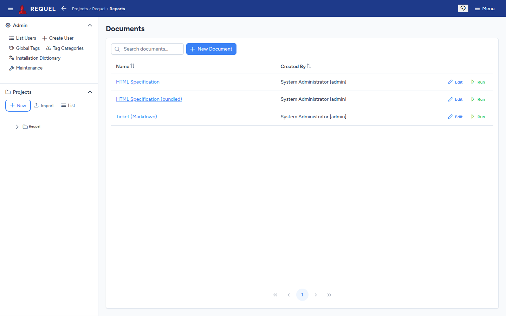

Reports
Turn a project into a document: a requirements specification, a ticket, or your own format.
Run a report
A project’s Reports page lists its report templates. Run builds the document from the project as it is now and downloads it.

Every new project gets two:
- HTML Specification
- The whole project as one web page: stakeholders, actors, goals, stories, use cases, scenarios and the glossary. See an example.
- Ticket (Markdown)
- The project as Markdown, to paste into an issue tracker.
A project imported from an older export may also have its own copies, like the sample’s HTML Specification; the bundled one is then named (bundled).
Write your own
A report template is an XSLT stylesheet applied to the project’s XML export, so it can produce any text format: HTML, Markdown, CSV, another XML.
- New Document creates one: give it a name and paste the stylesheet, or
Upload XSLT to load a
.xsl/.xsltfile. - Edit opens an existing one. A bundled template renders the latest version that ships with Requel; saving your own text in it detaches it, and from then on your text is used.
Start from a bundled template, or from the project schema, to see the elements you can select. If a run fails, the message names the cause.